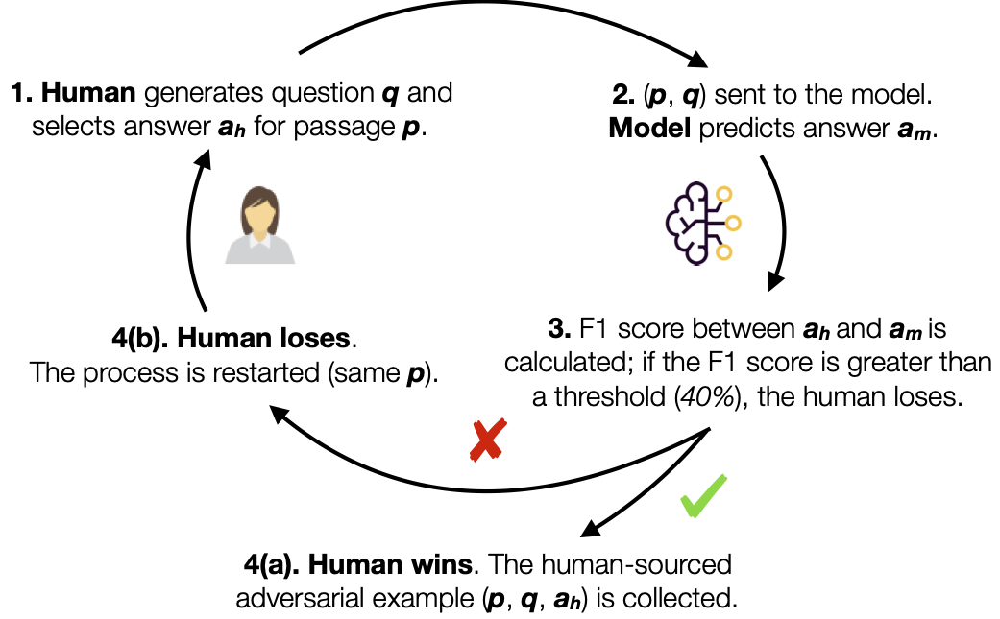

Adversarial Human Annotation
The annotation process pairs a human and a reading comprehension model in an interactive setting. The human is presented with a passage for which they write a question and highlight the correct answer. The model then tries to answer the question, and, if it fails to answer correctly, the human wins. Otherwise, the human modifies or re-writes their question until the successfully fool the model.
More explanation on the task and the dataset can be found in the paper.
